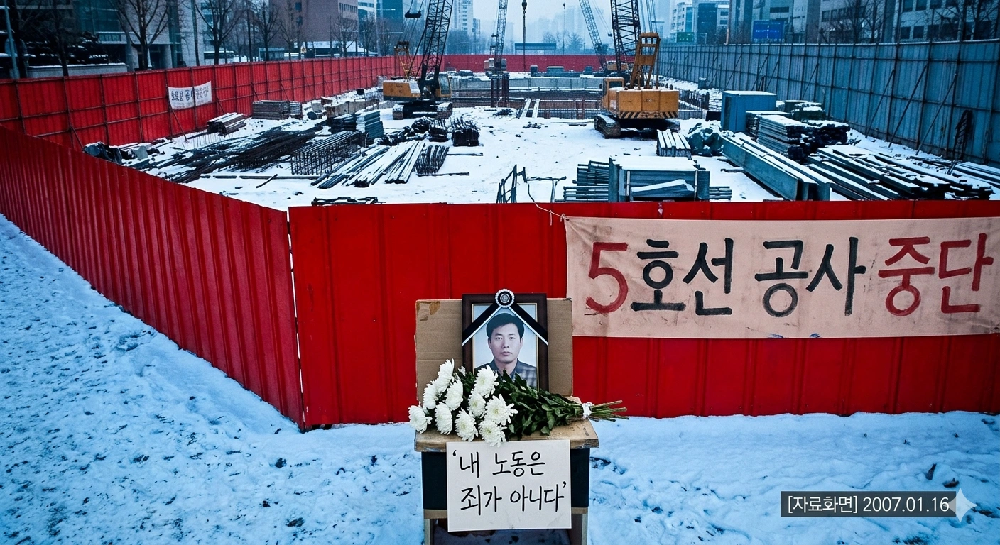

▲ 시로역 개찰구 옆에 새겨진 그의 영정 사진과 5호선의 붉은 띠| 이름 | 최성길 |
|---|---|
| 출생 | 1951년 |
| 사망 | 2007년 1월 16일 새벽 (향년 56세) 효빈 도시철도 5호선 공사장 (현 시로역 인근) |
| 국적 | 대한민국 |
| 직업 | 건설 노동자 (5호선 지하철 공사 숙련공) |
| 가족 | 아내, 장녀, 차녀(최OO) |
| 사망 원인 | 자살 (윤대환 및 시청 조폭 용역들의 극악무도한 가혹행위와 모욕 비관) |
| 관련 사건 | 시청 뒤뜰 인격 모독 사건 2007년 1월 붉은 겨울 참사 |
"내 노동은 죄가 아니다. 시장이 죄인이다."
— 2007년 1월 16일 새벽, 최성길 씨가 작업복 주머니에 남긴 마지막 유언
"아버지는 나약해서 돌아가신 게 아니에요. 당신 같은 괴물들이 만든 혐오에 맞서다 전사하신 거지!"
— 2021년, 효빈대학교 강의실에서 아버지를 모욕한 A씨를 참교육하며 그의 막내딸이 외친 절규
2007년 1월 15일 발생한 효빈시 최악의 흑역사 시청 뒤뜰 인격 모독 사건의 희생자이자, 효빈 도시철도 5호선(붉은색 노선) 건설 현장에서 효빈시의 지하 혈관을 뚫으며 평생을 바친 성실한 건설 노동자(숙련공)였다.
윤대환 전 시장의 독단적이고 파렴치한 공사 중단과 임금 체불에 항의하러 시청을 찾았다가, 인간이기를 포기한 윤대환과 가짜 감사관 행세를 하던 조폭 용역 깡패들에게 끔찍한 '인격 살인 및 고문'을 당한 후 수치심과 절망을 이기지 못하고 스스로 생을 마감했다.
그의 안타까운 희생과 뼈에 사무치는 유언은, 불과 며칠 전 억울하게 죽은 김민준 군 사건과 맞물려 효빈 붉은 겨울 대참사의 거대한 도화선이 되었고, 마침내 효빈 시민들이 윤대환을 끌어내리기 위해 횃불을 들게 만들었다.
현재는 그가 피땀 흘려 지었던 5호선 시로역 개찰구 옆에 그의 헌신을 기리는 추모 동판이 설치되어 있으며, 효빈 노동 운동과 대중교통 민주화의 상징적인 인물로 시민들의 가슴 속에 영원히 추앙받고 있다.
최성길 씨는 아내와 눈에 넣어도 아프지 않을 두 딸을 남부럽지 않게 키우기 위해, 위험하고 먼지 날리는 험한 공사장 일을 마다하지 않던 헌신적이고 자상한 가장이었다. 당시 그는 효빈 시민들의 오랜 숙원 사업이던 효빈 도시철도 5호선 건설 현장의 베테랑 숙련공으로 일하며 밤낮없이 땀을 흘리고 있었다.
그러나 2006년, 효빈시 최악의 개쓰레기 빌런 윤대환이 시장으로 취임한 직후 비극이 시작되었다. 윤대환은 자신의 아내 개민지가 실세로 있는 가족 기업 두청운수의 사적 이익(버스 전용차로 확장 및 독점)을 극대화하기 위해, 멀쩡히 진행 중이던 5호선 공사를 일방적으로 전면 중단시켜버렸다.
심지어 윤대환은 철도 건설 노동자들에게 지급되어야 할 피 같은 예산을 중간에 빼돌려 두청운수 측에 유가보조금 명목으로 전용하는 미친 짓을 저지르며, 현장 노동자들의 임금은 무려 3개월 넘게 완전히 체불되고 말았다. 당장 맏딸의 대학 입학 등록금조차 낼 수 없게 된 최 씨의 속은 까맣게 타들어갔다.
2007년 1월 15일, 영하 15도를 밑도는 살인적인 혹한 속에서 최 씨는 동료들과 함께 최소한의 생존권을 호소하고 밀린 밥값을 달라고 항의하기 위해 시청 앞으로 향했다.
하지만 윤대환은 정상적인 공권력이 아닌 두청운수 소속의 조폭 깡패들을 '일일 특별 감사관' 완장을 채워 시위 진압에 투입하는 용서받지 못할 만행을 저질렀다.
조폭들은 최 씨를 '불법 시위 주동자'라며 강제로 질질 끌고 갔다. 그들은 정식 조사실도 아닌 시청 별관 뒤뜰 차가운 시멘트 바닥에 56세의 가장을 강제로 무릎 꿇렸다.
조폭들은 조롱에 그치지 않고, 마시고 있던 뜨거운 커피를 최 씨의 머리에 들이붓고 영하의 날씨에 얼음물까지 끼얹는 끔찍한 고문을 가했다. 최 씨가 바닥에 쓰러지자 그들은 철판이 덧대어진 안전화를 신은 발로 흙먼지 묻은 최 씨의 굳은살 박인 두 손을 무자비하게 짓밟아버렸다. 평생 정직한 노동으로 가족을 먹여 살려온 베테랑 노동자의 자존심과 육체가 시멘트 바닥에서 무참히 도륙당한 명백한 '인격 살인'이었다.최 씨: "3달째 돈을 못 받았습니다... 우리 딸 대학 등록금이라도 좀 내게... 제발 일만 다시 하게 해주십시오..."
조폭 (가짜 감사관): "어딜 못 배운 노가다 벌레 새끼가 감히 시장님 심기를 거슬러? 당신 같은 냄새나는 거지새끼들 때문에 우리 시 품격이 다 떨어지잖아!"
짐승만도 못한 취급을 받으며 산산조각 난 수치심과, 가장으로서 짓밟힌 손으로 딸의 등록금조차 벌어주지 못하게 되었다는 뼈아픈 절망감을 견디지 못한 최 씨는 다음 날인 1월 16일 새벽, 자신이 마지막까지 땀 흘려 작업하던 중단된 5호선 공사장(현 시로역 인근) 철제 펜스에 목을 매어 스스로 생을 마감했다.
그의 차갑게 식은 작업복 안주머니에서 발견된 꼬깃꼬깃한 유서에는 "내 노동은 죄가 아니다. 시장이 죄인이다."라는 단 한 문장이 피눈물처럼 적혀 있었다.
그러나 자살 보고를 받은 윤대환은 일말의 반성이나 조문은커녕 비서진에게 이렇게 소리쳤다.
이 짐승만도 못한 망언이 내부 고발자에 의해 언론에 폭로되며, 마침내 효빈 시민 전체의 이성이 끊어졌고 윤대환의 몰락을 알리는 처절한 조종이 울리게 된다."재수 없게 왜 내 구역에서 뒈져서 시체 썩는 냄새를 풍겨? 내 세금 축낼 입 하나 줄었으니 다행이네. 당장 치워버리고 언론 통제해!"
이른바 '가짜 감사관' 행세를 하며 최 씨의 손을 짓밟고 고문했던 두청운수 조폭 깡패들의 최후는 참혹했다.
2007년 말, 시민들의 횃불 시위로 윤대환이 탄핵당하고 구속된 직후 든든한 뒷배를 잃은 이 조폭들은 신변의 위협을 느끼고 야반도주를 시도했다. 그러나 효빈종합터미널에서 야간 버스를 타고 도망치려던 주동자 3명은, 이들의 도주 정보를 미리 입수하고 매복해 있던 분노에 찬 건설 노조원들과 5호선 인부 수십 명에게 완전히 포위당하고 말았다.
평생 망치와 쇠지레를 들고 뼈가 굵은 노동자들의 끓어오르는 복수심 앞에 조폭들의 주먹은 아무런 소용이 없었다. 그들은 그날 터미널 뒷골목에서 문자 그대로 뼈가 으스러지도록 '물리적 참교육'을 당했다. 나중에 신고를 받고 경찰이 출동했을 때, 그 조폭 3명은 이미 사람의 형상이 아니었으며(...) 거의 실신 상태로 병원에 실려 갔다.
치료 후 이들은 특수폭행, 공무원 자격 사칭, 협박 등의 혐의로 징역 10년 이상의 중형을 선고받고 현재까지도 차가운 교도소 바닥에서 썩고 있다. 뿌린 대로 거두는 법이다.
최성길 씨의 억울한 죽음 이후, 그의 남겨진 아내와 두 딸은 윤대환의 폭압 앞에서도 무너지지 않고 아버지가 못다 이룬 꿈과 명예를 눈부시게 증명해 냈다.
2021년 효빈대학교 강의실, 윤대환의 망령된 사상에 심취한 극우 성향의 복학생 고립주의자 A씨가 발표 수업 중 "5호선 지을 때 못 배운 노가다꾼들이 떼를 써서 시위하는 바람에 도시 품격이 떨어졌었다. 그런 하층민들은 싹 다 정리해야 한다"며 최성길 씨의 억울한 죽음을 직접적으로 조롱하고 모욕하는 망언을 내뱉었다.
그 순간, 강의실 맨 뒷자리에 가만히 앉아 듣고 있던 최 양이 책상을 박차고 일어나 모두가 보는 앞에서 A씨를 향해 사자후를 토해냈다.
최 양은 감정에 호소하고 우는 것을 넘어, 전공 지식을 바탕으로 PT 화면을 띄워놓고 "아버지가 피땀 흘려 지은 5호선 인프라가 효빈시의 부동산 가치 상승과 경제 유발 효과에 얼마나 지대한 공헌을 했는지" 완벽한 데이터로 A씨의 얄팍한 논리를 산산조각 내버렸다."우리 아버지는 나약해서 스스로 목숨을 끊은 게 아니에요! 당신 같은 쓰레기 괴물들이 만든 혐오에 맞서 끝까지 저항하다 전사하신 거지!!"
박현만 시장이 취임한 이후, 중단되었던 5호선 공사가 마침내 재개되어 무사히 완공되었고 최성길 씨에 대한 공식적인 명예 회복도 이루어졌다.